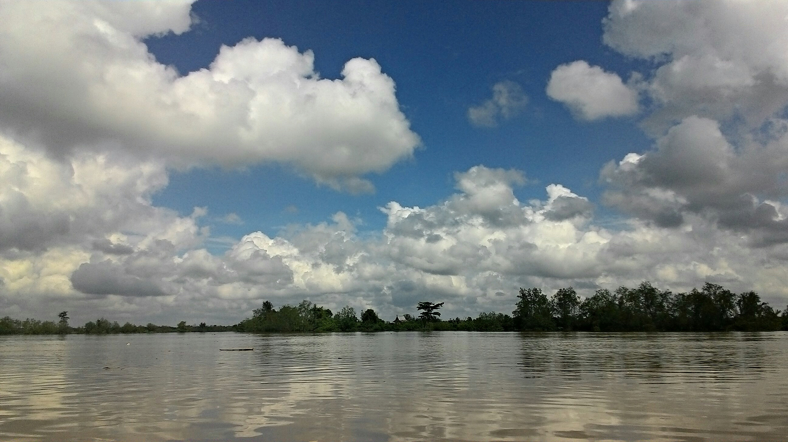

Kuala Tungkal
Kuala Tungkal, ibu kota Kabupaten Tanjung Jabung Barat di Jambi, menawarkan beragam destinasi wisata menarik di kawasan pesisirnya, mulai dari Titian Orang Kayo Mustiko Rajo Alam atau Water Front City (WFC) sebagai ikon kota untuk menikmati sunset dan suasana sungai Pengabuan, hingga Laman Orang Kayo Rajo Laksamano yang menjadi pusat rekreasi warga dengan area bermain anak dan pusat kuliner. Selain itu, terdapat Masjid Syaikh Utsman yang megah dan kerap dikunjungi wisatawan religi, Hutan Mangrove Pangkal Babu sebagai kawasan ekowisata seluas 500 hektar untuk melihat satwa dan jalur trekking di tengah bakau, Pantai Pasir Putih dengan panorama lautnya, hingga Air Terjun Calista Irawan bertingkat tujuh yang sejuk dan asri. Tak ketinggalan kawasan Wisata Kuliner Parit 1 di tepi sungai yang menawarkan aneka makanan khas Melayu dan seafood segar, sehingga Kuala Tungkal menjadi destinasi lengkap untuk wisata budaya, religi, kuliner, hingga alam.